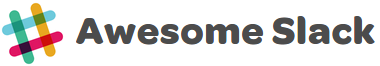

A list of communities about web development and design that are powered by Slack.
What's Slack?
Slack is a platform for team communication: everything in one place, instantly searchable, available wherever you go. - slack.com
Development
- Angular
- Ember
- NodeJS
- Laravel
- Ruby
- Front end
- FEDs On Slack
- Test
- Android
- GO
- Polymer
- Symfony
- Phalcon
- Clojure
- iOS Developers
- Elixir
- DevOps
- slashrocket
- Cordova
- Atom
- Quokka CMS
- #ruby, #python, #nodejs, #php, #go, #fed
Regional
- Asia - Focus Asia
- Australia & New Zealand
- Python Brazilian Community
- Python São Paulo Community
- Python Curitiba Community
Design
Misc
- WordPress
- Digital Nomad Chat
- Chit Chats
- The Evangelist Collective
- a11y
- HangOps
- Psychedelic Chat
- LGBTQ in Technology
- #Startup
- Digital Artisans
Looking for more lists like that?
Contribute
Your contributions and suggestions are :heart: welcome. Ensure to read the guidelines first.
License


Awesome Slack
A curated list of awesome, Slack-related things.
An avid Slack user? A developer looking for awesome tools to build out an integration? Just looking for inspiration? This is a list of all the best things Slack.
- :pencil: Lists
- :art: Themes
- :hammer_and_wrench: Libraries and SDKs
- :gear: Open-Source Slack Apps and Integrations
- :busts_in_silhouette: Contributions
- :classical_building: License
:pencil: Lists
- Community-Built Libraries - Slack-curated list of community open-source libraries
- Slack App Directory - Official directory of publicly available Slack apps
- Slack Emojis - Unofficial directory of custom emojis for Slack
:art: Themes
- Slack Themes - A Slack sidebar theme browser
- Sweet Themes Are Made of These - Website for sharing Slack custom palettes
:hammer_and_wrench: Libraries and SDKs
C#
- margiebot - A .NET library designed to make building bots for Slack fast, easy, and fun
- Slack.Webhooks - A library to work with Slack webhooks more easily
- SlackAPI - A third-party implementation of Slack's API written in C#
Erlang
- slacker - Erlang Slack REST API wrapper
Go
- webhook - Easily run commands in response to HTTP webhook requests from Slack
Java
- java-slack-sdk - Slack's official Java framework for building Slack apps
- simple-slack-api - A Slack client library in Java
JavaScript/TypeScript
- bolt-js - Slack's official JavaScript framework for building Slack apps
- jsx-slack - Build JSON object for Slack Block Kit surfaces from JSX
- node-slack-sdk - Slack's official SDK for Node.js
- slack-block-builder - Lightweight Node.js library for building Slack Block Kit UIs, with a declarative syntax inspired by SwiftUI
PHP
- SlackBundle - SlackBundle for Symfony2
- slack-php-app-framework - Robust PHP framework for building Slack apps in PHP
- slack-php-block-kit - Fluent interface for composing Slack Block Kit messages and modals in PHP
- slack-php-socket-mode - A Socket Mode implementation for slack-php-app-framework
- slack-php-slick - Dependency-free micro-framework for building Slack apps in PHP
PowerShell
- PSSlack - PowerShell module for simple Slack integration.
Python
- blockkit - A fast way to build Block Kit interfaces in Python
- bolt-python - Slack's official Python framework for building Slack apps
- django-slack - Slack integration for Django, using the templating engine to generate messages
- django-slack-oauth - Slack OAuth module for Django
- python-slack-events-api - Slack Events API adapter for Python
- python-slack-sdk - Slack's official SDK for Python
- slackblocks - Python API for building Slack Block Kit messages
- slack-php-api - PHP Slack client based on the official OpenAPI specification
- slacker-cli - Messages to slack from the command line
- slashbot - An easy way to create slash commands using AWS Lambda functions
- boltworks - Extensions to Slack's bolt framework: expandable GUIs, easier callbacks, richer CLIs
R
- slackr - A package to send webhook API messages to Slack channels/users from R
Ruby
- slack-notifier - A simple wrapper for posting to Slack
- slack-notify - Send notifications to Slack
- slack-poster - Simple gem to post messages on Slack using webhooks
- slack-ruby-block-kit - A ruby wrapper for Slack's Block Kit
- slack-ruby-bot - The easiest way to write a Slack bot in Ruby
- slack-ruby-bot-server - Ruby library for building Slack applications
- slack-ruby-client - A Ruby client for the Slack Web and RealTime Messaging APIs
Rust
- slack-morphism-rust - A modern async Slack API client for Rust
Scala
- slack-scala-client - A Scala Slack client for the Web and RTM API
Swift
- SwiftBlocksUI - Interactive Slack messages and modals using a SwiftUI-like declarative style
:gear: Open-Source Slack Apps and Integrations
CoffeeScript
- jinora - Slack webhook app to create anonymous public channels
Java
- simple-slack-api - A Slack client library in Java
- tasks-app - Simple task management app produced by Slack
JavaScript/Typescript
- definition-app - App for storing and accessing company-specific phrases
- slack-github-action - Send data into Slack using this GitHub Action
- slack-reporting-tool - App that allows team members to report offensive messages
- tesla-slack - Track your Tesla from Slack
- tasks-app - Simple task management app produced by Slack
PHP
- MantisBT-Slack - MantisBT plugin to send bug updates to Slack
- monolog - Sends your logs to Slack
Python
- slackbot - A chat bot for Slack
- slacker-cli - Messages to slack from the command line
- tasks-app - Simple task management app produced by Slack
- wee-slack - A WeeChat plugin for Slack
Ruby
- slack-gamebot - A game bot for Slack
- snarkov - Sinatra-based Markov bot for Slack
- tickbot - Simple team time tracking reminder
- trebekbot - A Jeopardy! bot for Slack
:busts_in_silhouette: Contributions
Contributions are always welcome! Please read the contribution guidelines first.
:classical_building: License

To the extent possible under law, Matias Singers has waived all copyright and related or neighboring rights to this work.